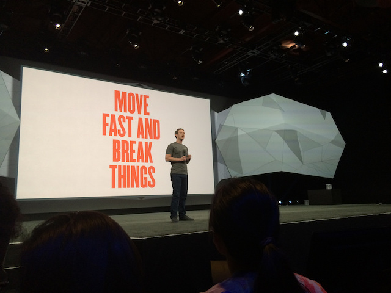

Invest in iteration speed

Continuous developement
“Why is continuous deployment such a powerful tool? Fundamentally, it allows engineers to make and deploy small, incremental changes rather than the larger, batched changes typical at other companies. That shift in approach eliminates a significant amount of overhead associated with traditional release processes, making it easier to reason about changes and enabling engineers to iterate much more quickly.”
“If someone finds a bug, for instance, continuous deployment makes it possible to implement a fix, deploy it to production, and verify that it works—all in one sitting. With more traditional workflows, those three phases might be split over multiple days or weeks; the engineer has to make the fix, wait days for it to be packaged up with other bigger changes in the week’s release, and then validate that fix along with a slew of other orthogonal changes. Much more context switching and mental overhead are required.”
“Because changes come in smaller batches, it’s also easier to debug problems when they’re identified. ”
Feature flag
“Just because changes are deployed incrementally, however, doesn’t mean that larger features aren’t possible or that users see half-finished features. A large feature gets gated behind a configuration flag, which is disabled until the feature is ready. The same configuration flag often allows teams to selectively enable a feature for internal team members, beta users, or some fraction of production traffic until the feature is ready. In practice, this also means that changes get merged incrementally into the master code repository. Teams then avoid the intense coordination and “merge hell” that often accompanies longer release cycles as they scramble to integrate large chunks of new code and get them to work together correctly”
“Focusing on small, incremental changes also opens the door to new development techniques that aren’t possible in traditional release workflows. Suppose that in a product discussion, we’re debating whether we should keep a certain feature. Rather than letting opinions and politics dictate the feature’s importance or waiting for the next release cycle to start gathering usage data, we could simply log the interaction we care about, deploy it, and start seeing the initial data trickle in within minutes.”
Move fast learn fast
“Facebook’s culture emphasizes iterating quickly and focusing on impact rather than being conservative and minimizing mistakes. The company might not use continuous deployment in production, but it has managed to effectively scale its workflow so that over a thousand engineers are able to deploy code to facebook.com twice a day. That’s an impressive feat.”
The faster that you can iterate, the more that you can learn about what works and what doesn’t work. You can build more things and try out more ideas.
Moving fast doesn't necessarily mean moving recklessly
Invest in time-saving tools
“Bobby Johnson, a former Facebook Director of Infrastructure Engineering, told me, “I’ve found that almost all successful people write a lot of tools … ”
“Consider two engineers, Mark and Sarah, working on two separate projects. Mark dives head first into his project and spends his next two months building and launching a number of features. Sarah, on the other hand, notices that her workflow isn’t as fast it could be. She spends her first two weeks fixing her workflow—setting up incremental compilation of her code, configuring her web server to automatically reload newly compiled code, and writing a few automation scripts to make it easier to set up a test user’s state on her development server. These improvements speed up her development cycles by 33%. Mark was able to get more done initially, but after two months, Sarah catches up—and her remaining six weeks’ worth of feature work is as productive as Mark’s eight weeks’. Moreover, Sarah continues to move 33% faster than Mark even after those first two months, producing significantly more work going forward.”
Switching to languages with interactive programming environments can have a similar effect. In Java, testing out a small expression or function entails a batch workflow of writing, compiling, and running an entire program. One advantage that languages like Scala or Clojure, two languages that run on the Java Virtual Machine, have over Java itself is their ability to evaluate expressions quickly and interactively within a read-eval-print loop, or REPL. This doesn’t save time just because the read-eval-print loop is faster than the edit-compile-run-debug loop; it also saves time because you end up interactively evaluating and testing many more small expressions or functions that you wouldn’t have done before.
It’s wishful thinking to believe that all the code we write will be bug-free and work the first time. In actuality, much of our engineering time is spent either debugging issues or validating that what we’re building behaves as expected. The sooner we internalize this reality, the sooner we will start to consciously invest in our iteration speed in debugging and validation loops.
Shorten your debugging and validation loops
A minimal, reproducible test case removes all unnecessary distractions so that more time and energy can be spent on the core issue, and it creates a tight feedback loop so that we can iterate quickly.
Mastering your programming environment
Given how much time we spend in our programming environments, the more efficient we can become, the more effective we will be as engineers.
“The key is to be mindful of which of your common, everyday actions slow you down, and then figure out how to perform those actions more efficiently. Fortunately, decades of software engineers have preceded us; chances are, others have already built the tools we need to accelerate our most common workflows. Often, all we need to do is to invest our time to learn them well.”
Here are some ways you can get started on mastering your programming fundamentals:
Get proficient with your favorite text editor or IDE
Learn at least one productive, high level programming language
Get familiar with Unix (or Windows) shell commands
Prefer the keyboard over the mouse
Automate your manual workflows
Test your ideas on an interactive interpreter
Make it fast and easy to run just the unit tests associated with your current changes
Use testing tools that run only the subset of tests affected by your code. Even better, integrate the tool with your text editor or IDE so that you can invoke them with a few keystrokes.
Don't ignore your non-engineering bottlenecks
One common type of bottleneck is dependency on other people
Communication is critical for making progress on people-related bottlenecks. Ask for updates and commitments from team members at meetings or daily stand-ups. Periodically check in with that product manager to make sure what you need hasn’t gotten dropped. Follow up with written communication (email or meeting notes) on key action items and dates that were decided in-person. Projects fail from under-communicating, not over-communicating. Even if resource constraints preclude the dependency that you want from being delivered any sooner, clarifying priorities and expectations enables you to plan ahead and work through alternatives.
Another common type of bottleneck is obtaining approval from a key decision maker, typically an executive at the company.
Don’t wait until after you’ve invested massive amounts of engineering time to seek final project approval. Instead, prioritize building prototypes, collecting early data, conducting user studies, or whatever else is necessary to get preliminary project approval. Explicitly ask the decision makers what they care about the most, so that you can make sure to get those details right. If meeting with the decision makers isn’t possible, talk with the product managers, designers, or other leaders who have worked closely with them and who might be able to provide insight into their thought processes.
A third type of bottleneck is the review processes that accompany any project launch, whether they be verification by the quality assurance team, a scalability or reliability review by the performance team, or an audit by the security team.
It's easy to get so focused on getting a feature to work that you defer these reviews to the last minute only to realize that the team that needs to sign off on your work hadn’t been aware of your launch plans and won’t be available until two weeks from now. Plan ahead. Expend slightly more effort in coordination; it could make a significant dent in your iteration speed. Get the ball rolling on the requirements in your launch checklist, and don’t wait until the last minute to schedule necessary reviews. Again, communication is key to ensure that review processes don’t become bottlenecks.